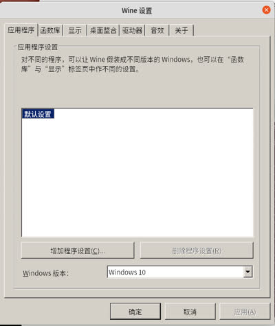
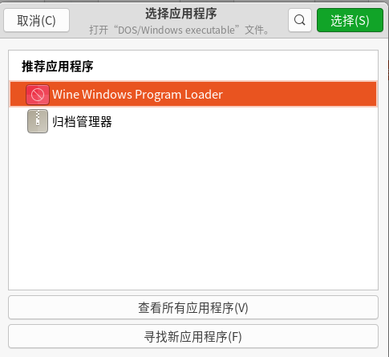
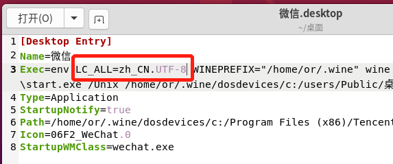
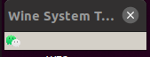
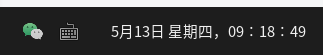

首先，建议使用Ubuntu20版本安装wine，因为新版wine使用了libfaudio这个library，而Ubuntu18是没有内置这个library的，当然这并不是最重要的，重要的是Ubuntu18安装这个library超级麻烦，根据wine官方的wiki去安装，根本无法安装成功，当然真要较真安装，也能装上，前提是你不怕浪费生命- -
如果你的部分软件（如驱动）依赖固定版本内核，可以锁定内核版本后升级，这样系统升级但是内核版本会保留不变
安装wine
如前所述，如果你用的是Ubuntu18以上版本，那么按照官方wiki来就ok了，可以正常安装成功，官方文档链接在这里传送门
安装微信
wine成功安装完毕后，终端中运行winecfg，打开配置页面，这时wine会自动安装它所需要的依赖，正常的点击确定，让它安装就好，安装完毕后页面如下

出现这个页面后，说明wine已经可以正常使用了
接下来去微信官网下载微信安装包（exe格式）
下载完毕，右键exe文件，选择“使用其它程序打开”，弹出下面窗口

选择使用wine打开即可正常安装微信~
配置微信运行环境
上面只是安装成功了，但是并不能正常使用，还需要做些配置才可以正常使用
1、安装winetricks
终端运行命令sudo apt install winetricks安装winetricks
2、 安装riched20（解决输入框不显示输入内容问题）
终端运行winetricks riched20，但是并不能正常运行成功，会提示超时，需要手动下载，需要的两个文件下载链接：W2KSP4_EN.EXE、InstMsiW.exe，之后将W2KSP4_EN.EXE复制到/home/[user]/.cache/winetricks/win2ksp4目录下，将InstMsiW.exe复制到 /home/[user]/.cache/winetricks/msls31目录下，再次运行winetricks riched20即可，截止发文前，这两个下载链接均可正常下载，若上面的下载链接也已失效，请留言沟通私下分享给你吧~
3、 设置微信运行环境为中文（解决输入框中文显示乱码问题）
在安装完毕微信后，桌面会出现一个微信的快捷方式
使用文本编辑器将打开，在exec=env后，添加LC_ALL=zh_CN.UTF-8

4、添加Topicons Plus插件
这个插件的目的是将wine窗口收缩到任务栏，类似win样式，默认安装完微信后，桌面左上角会有一个wine的窗口，说实话，挺难看的🤨

可以通过gnome的插件将这个窗口移到任务栏中，这里假设你已经安装了tweak,v如果还没有安装，可以参考其它作者的博客（传送门）安装
安装成功后，打开gnome插件仓库：传送门
搜索Topicons Plus，将其打开即可，插件会自动帮你安装，安装完毕后的效果如下图

未解决问题
1、打开微信后，切换到其它程序，会有微信窗口的残影，这个暂时还没有解决，看到有人说也可以解决，但是太折腾，我就不想浪费时间了，反正不影响使用
2、无法打开小程序、网页，因为我需要的主要是消息发送功能，所以这个并不想解决，想来应该是微信内置的浏览器插件无法正常在wine环境下工作的原因